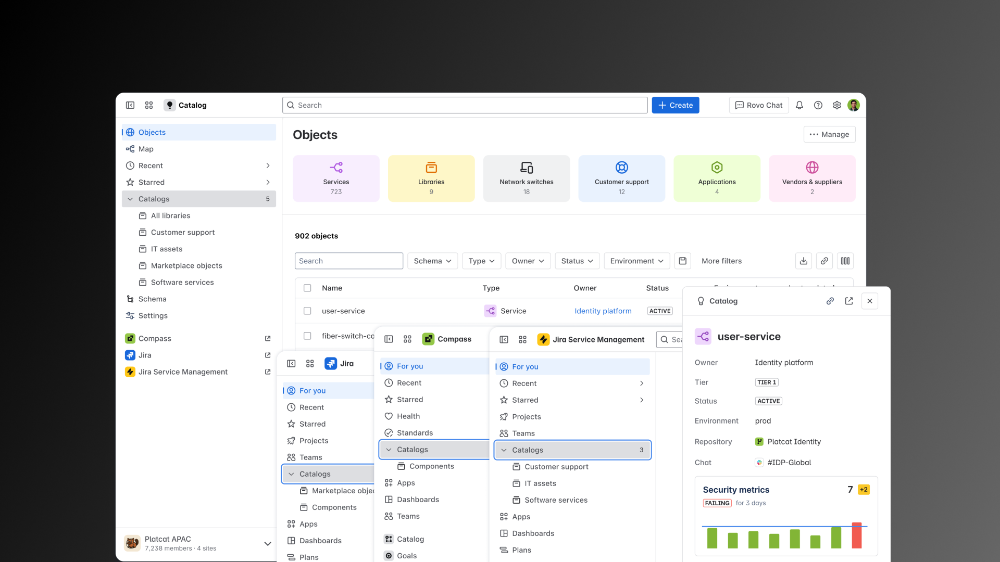
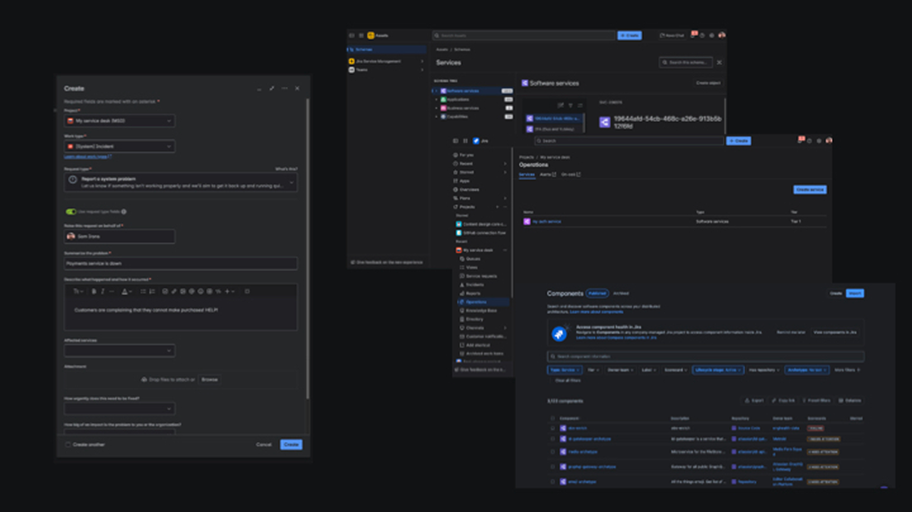
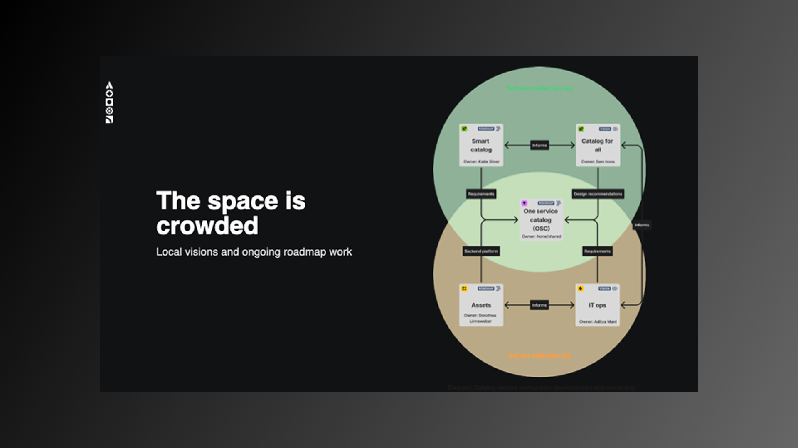
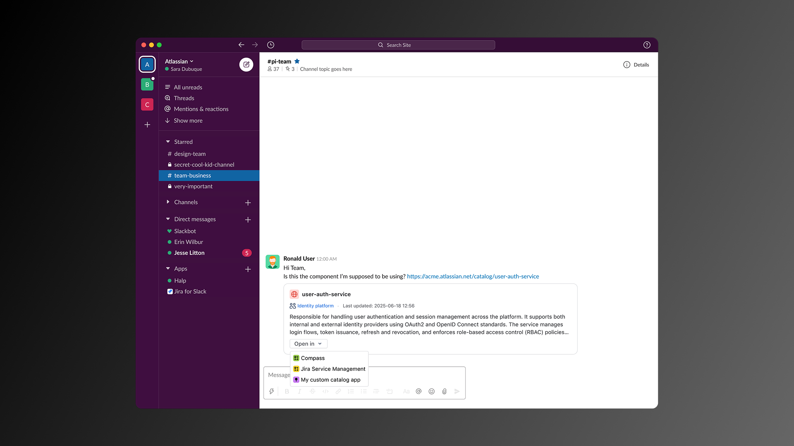
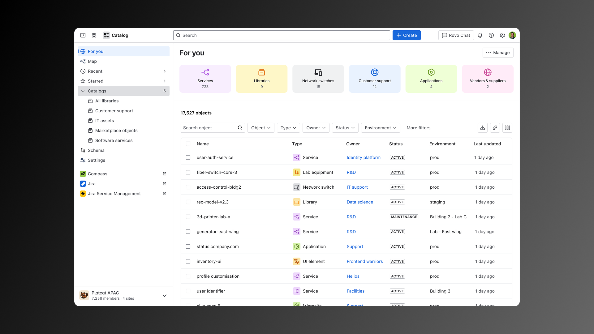
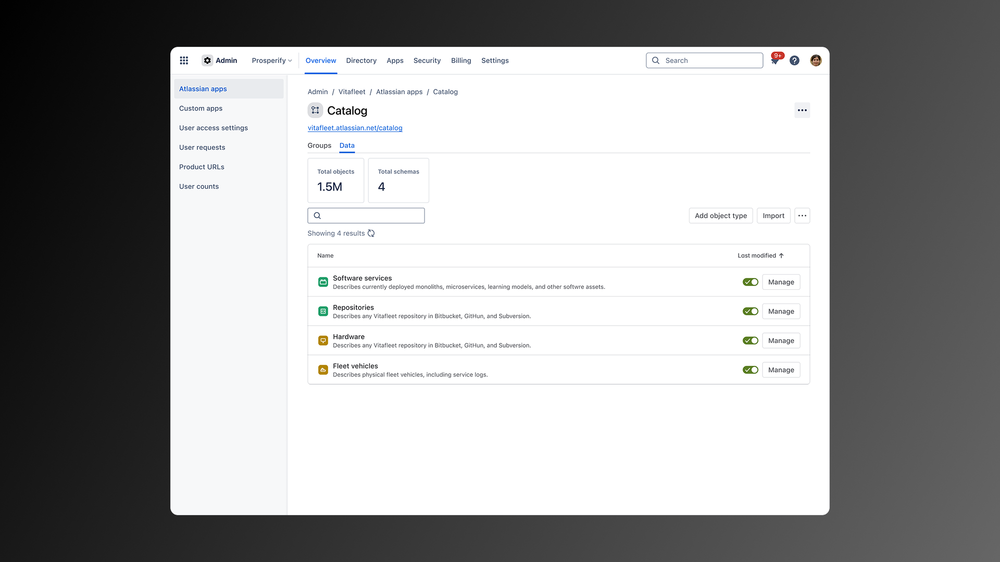

Catalog for all - a consolidation of service registries across a suite of apps
Atlassian released Compass, a developer console for teams to catalog their software architecture and microserves. Then, they acquired a configuration management database tool adopting it as Assets, a premium feature for Jira Service Management. Jira Service Management built a services directory to serve IT service management use cases. And, Jira Software supported a service registry backed by their own "components" objects.
In short, Atlassian was supporting mutliple service registries. Customers didn't know which to purchase, which supported certain features and capabilities in their product ecosystem, and how to interact properly with service catalogs when moving between tasks in Jira, Compass, and the Atlassian platform at large.
My role: Lead designer, facilitator, and
core contributor
Skills: Systems design, service design,
product design, design vision, strategic design
The challenge

Atlassian’s customers faced steep adoption barriers: setup was high-effort with unclear payoff, and users were forced to choose between multiple, overlapping service catalogs — Compass’s software component catalog, Jira Service Management’s services catalog, and JSM’s premium Assets catalog. Our products were unclear as to which catalog was leveraged in different experience across our apps. And, each required separate data management. This confused customers and stalled adoption.
Compounding the issue, Assets was a recent acquisition seeking a natural home in the product suite, and Compass was struggling to find product-market fit in a crowded developer-tools landscape. Without clarity, Atlassian risked product fragmentation, wasted engineering investment, and customer frustration.
My role and remit
I was the DRI for the design sprint addressing catalog consolidation.
I partnered with Compass leadership, design leadership across business units (Atlassian's software, IT service management, and platform service orgs), PM for each domain, a senior researcher, and exeuction designers from Compass, Assets, Jira Service Management, and platform services.
I collaborated closely with Atlassian’s System of Work team, which defines conceptual/technical architecture across the company.
My responsibilities included setting the design direction and vision, facilitating cross-org collaboration, leading exploratory design and content strategy, partnering with research to guide concept testing, developing concepts (both UI/UX and content design), and bringing stakeholders along the journey through weekly async Loom walkthroughs and direct 1:1 alignment with senior leaders.
Approach
I conceived the investigation using the double diamond approach for design thinking. I started with helping the team understand the problem space and prior art. Early on, I facilitated workshops to explore potential conceptual models to align with emerging System of Work architecture. Then, I led multi-displinary collaboration to ideate and explore potential solutions. Finally, I paired with a lead product designer and a researcher to prepare vision concepts for customer testing and leadership influence.
Preparation and discovery
I mapped stakeholders and developed a "design gameplan" (an approach adopted from fellow design leader Nicole Burton) to frame conversations around objectives, scope, and expected outcomes. This aligned stakeholders to the rough shape of the work we were undertaking and negotiated participation from cross-functional teammates.
I facilitate a project kickoff to bring together disparate collaborators and introduce them to the work and their responsibilities.
Different organizations and collaborators have different understandings of the problem space based on their specific elevations, current business goals, and needs/asks from platform services. Because of this, secondary research and proper problem diagnosis and framing were essential to align siloed business leaders, and set the expectation of what our vision would deliver.

The space was croweded. Visual communication, specifically for how our vision fit with related, locally-scoped roadmap work and tangential design exlporations, was essential for getting teams to understand how their work was influencing, informing, and, in some cases, blocking Atlassian's strategic direction towards cross-product consistency and a centralized conceptual model across Atlassian suite of apps.
This diagram I designed was one of the most valueable pieces of the puzzle. It was leveraged by product and engineering leadership to negotiate roles and responsibilities for contributing to our consolidated platform experience.
In addition to this stakeholder management and internal communication work, I facilitated several sessions to lock down an explicit problem statement and scope for the spike, including:
- Stakheholder mapping
- Literature review and secondary research
- Problem diagnosis and problem framing workshops
- Current product/experience walkthroughs (illustrating conceptual and experience clashes from the user's perspective)
- Customer archetype definintions
At the end of this "wonder" phase, I brought senior and executive leaders together to communicate and clarify the problem space, the in-flight work related to the problem space, and the purpose and proposed outcomes of our vision work. By the end of that meeting, we had successfully aligned and sequenced prerequisite development work, already reducing duplicative work across the portfolio and redirecting several engineering teams to build other priority experiences for their product organization.
Exploration
Through our discovery activities, I identified 2 streams of design exploration needed to address stakeholder concerns: 1.) catalog usage, navigation/search, view/access to catalog objects, and other "regular use" concepts; 2.) setup, configuration, and importing catalog objects

One highlight: When exploring ideal customer journeys, I mocked up interactions where customers may follow links or smartlinks to catalog objects. While each product claimed a need to support distinct object directories, this journey proved that supporting multiple catalogs placed undue cognitive burden on the user, asking them to choose which app experience to open the object record. This insight helped us advocate strongly for a centralized master record and platform app experience complemented by contextual app views into object details.

As part of our vision involved consolidation of existing experiences, I worked hard to grab the successful and serviceable experiences from related product surfaces. As we recommended a new platform app, I wanted to show that one app can serve the needs of multiple personas or jobs-to-be-done, including supporting primary catalog use cases for the markets our federated apps cater to. We illustrated how a comingled catalog app can be filtered and customized to support CSM, ITSM, CMDB, and platform engineering use cases.
Our emerging principles spoke to how to maintain our vision for conceptual frameworks. These included statements like "catalog jobs belong in the catalog app" and "administration jobs belong in Atlassian administration."
Of specific note, we repeated a regular refrain to our product partners: the closer to the context of a specific job to be done, the more opinionated we can be about how a cataloged object is displayed. Since catalog objects collected at a platform level service multiple product capabilities in distinct target markets, they capture far more descriptive information and metadata than any one persona needs when carrying out a job. For example, IT service agents probably don't need to know the realtime test coverage of a software component. And, vice-versa, software developers probably don't need to know the service license agreements of the hardware their software runs on. Master records need to capture all of these things, but we wanted to make sure that only the most relevant object details are surfaced in the context of specific Atlassian apps.

Outcomes and impact
In the end, we delivered a painted picture of the future of service cataloging in Atlassian apps, opening the space to accomodate any/all CMDB objects woven directly into Atlassian's Teamwork Graph and System of Work. Essentially, this allows a master record to track any object a company wants to model. It provides contextual views of that data tailored to the jobs-to-be-done of the experience where catalog records are surfaced. And, it sets up Atlassian for the future, where Rovo and other ML-based technologies can traverse, infer, and build smart experiences off of a company's cataloged data.
Our mockups and prototypes set the vision for the future of the newly-acquired Assets product and its strategic importance to the Atlassian platform. The team was reorganized into the platform organization. The lead designer I paired with in the spike was transferred to lead the delivery of this vision. Compass teams were pivoted to begin building the consolidated backend architecture as a prerequisite to executing our customer-facing Catalog app. This freed up Jira Service Management teams to pursue other top-priority items. During our sprint, the Compass product was determined to have failed to find product market fit. This vision work also salvaged large swaths of the Compass product technology to accelerate the development of Assets on the platform.
Learnings
The hardest challenge wasn't the solutions work. It was navigating organizational silos and competing roadmaps across the software market organization who sponsored this work (in Australia), the IT service management market organization who relied on the solution (in India), and the Compass team (in the USA) who were spinning to find a return on investment in a faltering product.
Visual communications – the power of simple diagramming to cut through politics and clarify opportunities – was the biggest learning for me. By taking the time to visualize product overlaps and duplicative efforts, I was able to drive alignment and unlock executive decisions on consolidation.